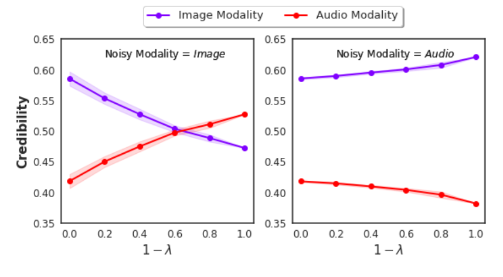

Credibility-Aware Multi-Modal Fusion Using Probabilistic Circuits
Sahil Sidheekh, Pranuthi Tenali, Saurabh Mathur, Erik Blasch, Kristian Kersting, Sriraam Natarajan · AISTATS 2025
Accepted at the 28th International Conference on Artificial Intelligence and Statistics (AISTATS) 2025. In this work: (1) we introduce a principled probabilistic approach for fusing information from multiple modalities of varying reliability; (2) we derive a theoretically sound measure of credibility, connected to the conditional entropy over unimodal predictive distributions; (3) we present two late/decision fusion algorithms built on it; (4) we experimentally validate the approach's ability to model complex inter-modality interactions and faithfully estimate their credibility.
Multimodal Fusion
Decision-making in domains like healthcare requires reliable learning and reasoning from diverse data sources — MRIs, EHRs, blood tests. Multimodal data offer rich, complementary views of underlying phenomena, but also present real challenges: heterogeneity across views, and raw data that is often noisy, incomplete, and inconsistent. Multimodal fusion methods integrate this complementary information for better performance and reliability. We focus on the late (decision) fusion setting, where each modality's model makes its own prediction and a combination function fuses them.
Assessing a Source's Reliability via Credibility
Combining predictions from multiple heterogeneous sources requires accounting for each source's reliability — which we define with respect to consistency: a source is reliable if it provides credible information. Human experts might self-report confidence; automated sources need external evaluation. We define the credibility of a modality $X$ as the difference between the target's conditional probability with and without observing that modality:
This assigns high credibility to a modality if excluding it significantly shifts the final predictive distribution; if the fused output barely changes, the modality contributes little and gets a lower score.
Efficient Credibility via Tractable Probabilistic Models
Computing this measure requires conditioning under partial observability. We model the joint distribution over the unimodal models' predictions and the target using probabilistic circuits — representing the joint probability as a computational graph of simple distributions, which lets us compute exact conditionals efficiently and differentiably.
We define two combination functions from this joint distribution: Direct-PC (DPC), which directly computes the conditional over the target given the unimodal predictive distributions, and credibility-weighted mean (CWM), which combines unimodal predictions weighted by their relative credibility. Both are differentiable, so the whole model learns end-to-end via backpropagation.

Each input modality $\mathbf{X}_i$ is processed by a unimodal predictor to get a predictive distribution $\mathbf{p}_i$ over the target $Y$. A probabilistic circuit models the joint distribution over the unimodal predictions and $Y$; the final prediction runs inference over it, governed by the fusion function used.
Empirical Evaluation
We evaluate credibility inference on AV-MNIST (image and audio modalities, target is the digit shown/spoken), constructing noisy versions by injecting varying degrees of noise into one modality while keeping the other fixed. In both settings, the credibility score of the noisy modality decreases as its noise increases, while the non-noisy modality's credibility increases — averaged over the test set.

Mean test relative credibility for the two AV-MNIST modalities across varying degrees of noise ($\lambda$) introduced into each.
Citation
@inproceedings{sidheekh2024credibility,
title = {Credibility-aware Multi-Modal Fusion Using Probabilistic Circuits},
author = {Sidheekh, Sahil and Tenali, Pranuthi and Mathur, Saurabh and Blasch, Erik and Kersting, Kristian and Natarajan, Sriraam},
booktitle = {International Conference on Artificial Intelligence and Statistics},
year = {2025}
}
Acknowledgements
The authors gratefully acknowledge the support of AFOSR award FA9550-23-1-0239, ARO award W911NF2010224, and the DARPA Assured Neuro Symbolic Learning and Reasoning (ANSR) award HR001122S0039.